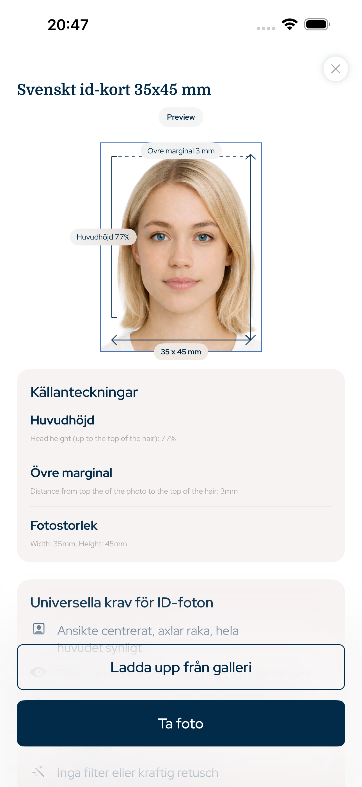

Sverige · passfoto app, passfoto iPhone, ID-foto, visumfoto, körkortsfoto
Passfoto och ID-foto med rätt mått
Den här iPhone-appen förbereder passfoto, visumfoto, ID-foto och körkortsfoto med exakt fotostorlek, huvudproportion, toppmarginal, bakgrund och export för digital användning eller utskrift.
- Ansikte
- Ingen AI-ändring
- Beskärning
- Huvud + toppmarginal
- Export
- Digital + utskrift

Toppmarginal
exakt
Huvudproportion
styrd
Sökbara krav
Byggd på officiella fotoregler
Appen fokuserar på mätbara dokumentfotoregler: fotostorlek, pixelexport, huvudhöjd, ansiktsposition, toppmarginal, bakgrund och utskriftslayout.
Huvudproportion och toppmarginal
Ingen AI-ändring av ansiktet
Digital fil och utskriftsark
Sverige document types
Foton den här appen kan förbereda
Passfoto App för iPhone täcker vanliga officiella fotoprocesser för iPhone-användare som behöver en digital fil eller ett utskriftsklart ark.
Passfoto
ID-foto
Visumfoto
Körkortsfoto
Utskriftsark
Fotointegritet
Inga AI-ändringar av ansiktsdrag
Arbetsflödet är avsiktligt praktiskt: beskär bilden, justera huvudet, bevara ansiktet, förbered bakgrunden och exportera rätt storlek. Det är gjort för förberedelse av officiella dokumentfoton, inte skönhetsretusch.
1Välj land och dokument
2Justera huvud och marginal
3Exportera digital fil eller utskriftsark
Frågor
FAQ
Kan appen göra passfoto?
Ja. Välj land och dokumenttyp för styrd storlek, beskärning och export.
Ändras ansiktet med AI?
Nej. Appen ändrar inte ansiktsdrag.
Kan jag skriva ut bilden?
Ja. Exportera en digital fil eller ett utskriftsklart ark.
Passfoto App för iPhone
Skapa passfoto, visumfoto, ID-foto och körkortsfoto på iPhone med rätt storlek, huvudproportion, toppmarginal och export.
Ladda ner i App Store